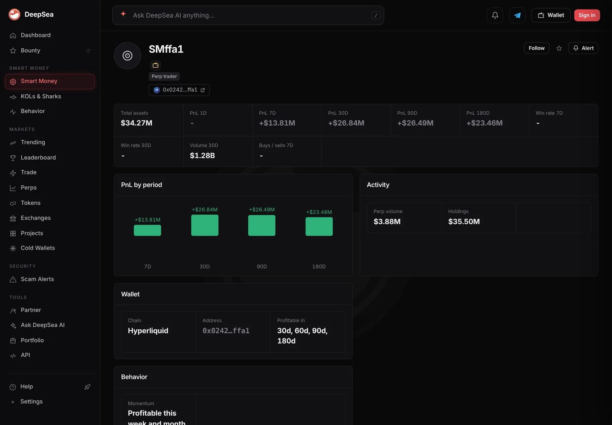

Smart money trader SMffa1 made $13.8 million in a week, 40% of its $34.3 million wallet
DeepSea ranks SMffa1 No. 3 on Hyperliquid this week. At 6:45 a.m. ET its live trades were in stock-price markets such as LITE, SKHY and SOXL, not crypto.
Key points
- DeepSea's 7-day Smart Money board put SMffa1 at No. 3 at 6:36 a.m. ET on November 10: +$13.81 million on $34.27 million of total assets, about 40%.
- Its trader page shows +$26.84 million over 30 days on $1.28 billion of volume, and DeepSea marks it profitable over 30, 60, 90 and 180 days.
- Its newest fills were small trades in builder-run stock markets: LITE, SKHY, SOXL and IBM. CoinGecko's Hyperliquid data had SOXL up 18.6% and LITE up 10.1% in 24 hours.
 What DeepSea's data shows
What DeepSea's data shows
DeepSea's Smart Money board ranks tracked wallets by realized profit. On the 7-day view at 6:36 a.m. ET on November 10, the top three were all Hyperliquid perpetual futures traders (perps are futures with no expiry date): SMc060 at +$36.67 million, SM6e36 at +$31.38 million and SMffa1 at +$13.81 million. SMffa1 is by far the smallest of the three, with $34.27 million in total assets against about $182 million each for the two above it.
The SMffa1 trader page (address ending in ffa1) adds the longer record: +$26.84 million over 30 days, +$26.49 million over 90 days and +$23.46 million over 180 days, on $1.28 billion of 30-day volume. DeepSea tags it "Momentum" and "Profitable this week and month." Its holdings table listed $35.49 million of USDC, the dollar stablecoin Hyperliquid uses as margin.

Data: DeepSea (desea.io), checked November 10, 2026, 6:45 a.m. ET.
It is trading stocks, not coins
The live trades panel at 6:45 a.m. ET did not show bitcoin or ether. Every fill was in a market with the xyz: prefix: LITE, SKHY, SOXL and IBM. These are stock-price markets set up by an outside builder on Hyperliquid under its HIP-3 rules for builder-deployed perpetuals.
The fills were small, from about $10 to $3,000 each: 11 LITE fills within a minute, six SKHY fills from $89 to about $3,000, a $500 SOXL fill that DeepSea marked $69.10 in profit and two IBM fills of about $214 each, each marked minus $1.40. Small, fast slices like these often come from software that splits a large order. DeepSea does not say who runs the wallet or why.
The markets it was trading
We checked the same markets on CoinGecko's Hyperliquid derivatives data, last updated at 6:16 a.m. ET. SOXL was the big mover, up 18.56% in 24 hours to $54.92 with $18.51 million in open bets. LITE rose 10.10% to $587.24 and SKHY rose 6.80% to $132.55, with $68.44 million open, the largest of the four. IBM slipped 0.41%.
Crypto was quieter. CoinGecko showed bitcoin at $74,331, down 0.2% in 24 hours, and ether at $2,092, down 1.2%, at 6:49 a.m. ET.
24-hour price change on Hyperliquid, markets SMffa1 traded
%
November 10, 2026, data last updated 6:16 a.m. ET. Source: CoinGecko, Hyperliquid (Futures).
Why it matters
Most of DeepSea's top smart money wallets made their money betting on crypto prices. SMffa1's newest activity shows how Hyperliquid's stock markets now pull in big traders too. A 40% weekly gain on its current balance is large, but DeepSea's profit figures count closed trades and do not show deposits or withdrawals, so the true return on the money it started with is unknown.
We could not open Hyperliquid's own wallet API or an explorer page for this address in this session, so its open positions are not confirmed outside DeepSea.
LC Insight analysis
This section is our reading of the facts above, not a statement of fact.
- We think SMffa1 is worth watching because it is winning with a smaller wallet than the leaders, which points to sizing and timing rather than sheer size.
- The stock-market fills suggest the trader is following this week's chip-stock move. DeepSea's panel shows only the latest fills, so we cannot say how big its stock bets are in total.
- Read the 40% figure with care. DeepSea counts closed trades and not deposits or withdrawals, so the real return on the money this trader started with could be higher or lower.
What's next
- Whether SMffa1 keeps its No. 3 spot when the 7-day window rolls
- Whether its holdings stay all in USDC or a large crypto position appears
- Open bets in Hyperliquid's SOXL and SKHY markets after the U.S. CPI report at 8:30 a.m. ET
Disclaimer. This article is based on public information and the sources listed below as of the update time shown. It is for information only and is not investment, legal or tax advice. Figures may change as companies and authorities publish new data.
Sources
- DeepSea, Smart Money leaderboard, 7D (read November 10, 2026, 6:36 a.m. ET)
- DeepSea, trader page SMffa1: PnL, holdings, live trades (read November 10, 2026, 6:45 a.m. ET)
- CoinGecko API, Hyperliquid (Futures) tickers (read November 10, 2026, 6:58 a.m. ET; data last updated 6:16 a.m. ET)
- Hyperliquid Docs, HIP-3: builder-deployed perpetuals
- CoinGecko, Bitcoin and Ethereum prices (read November 10, 2026, 6:49 a.m. ET)